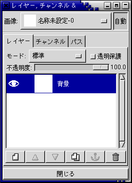
画像や図形を格納したファイルの種類には，用途などによって様々なものがあります．
作図ソフトの Tgif（後述）では，図を線分や円などの図形要素の組み合わせで表現しています．このような図のデータは，一般にベクトル形式と言います．PostScript や EPS，PDF などもベクトルデータを保持することができます．これに対して，写真のように色のついた点（画素，ピクセル）の集合で画像を表現したものは，ビットマップ形式と言います．Windows の画像データである BMP や，デジタルカメラや Web で使用される JPEG などがビットマップデータです．普通，画像データと言えば，ビットマップデータのことを指します．
ベクトル形式のデータは拡大縮小してもぼやけたりつぶれたりすることがありませんが，写真のような画像を扱うことが困難です．ただしベクトル形式のデータでも，図形要素の一つとしてビットマップ形式のデータを保持することがあります．
図形ファイルや画像ファイルを画面に表示するソフトウェアを，一般にビューアと言います．ページャも言わばテキストファイルのビューアです．
| 拡張子 | ファイルの種類 | ビューアソフトウェア |
|---|---|---|
| .ps | PostScript | gs, gv, ghostview |
| .eps | Encapsulated PostScript | |
| Portable Document Format | xpdf, acroread | |
| .gif | Graphics Interchange Format | display, ee |
| .jpg, .jpeg, .jfif | JPEG File Interchange Format | |
| .bmp | Microsoft Windows Device Independent Bitmap | display, ee |
| .tif, .tiff | Tag Image File Format | display, ee |
| .png | Portable Network Graphics | display, ee |
| .tga | TrueVision Targa | display |
ビューアソフトウェアの中でもっとも手軽に使用できるのは ee (ElectricEyes) でしょう．display は ImageMagick という画像管理ソフトウェアの一部で，非常に多機能です．この他に，画像の表示機能はありませんが netpbm というコマンド群を用いれば，たいていの画像ファイルの形式を別の画像ファイルの形式に変換することができます．
ビューアソフトウェアによっては，拡張子が指定されていなくても画像ファイルの種類を判別できる場合があります．magic は Unix や Linux において拡張子に頼らずにファイルの中身を判別する手段です．magic とはマジックナンバーのことですが，ファイルのタイプに対して実際に番号が割り振られているわけではありません．これは file コマンドがファイルの中身を調べるときにヒントとして使っているファイルの先頭のデータのパターンです．パターンのデータベースは /usr/share/magic というファイルにあります．
| file ～ファイルの種類を調べる |
|---|
% file image.png[Enter] image.png: PNG image data, 720 x 540, 8-bit, colormap, non-interlaced % file figure.ps[Enter] figure.ps: PostScript document text conforming at level 2.0 |
Unix/Linux ではファイル名の拡張子による判断があてにならない（拡張子が付いていないものが多い）ため，これを使って中身を確認するアプリケーションソフトウェアもあります．もちろん，magic がデータベースに登録されていないファイルは判断できません．
gimp （このページの日本語訳はここ）は非常に高機能な画像編集ソフトウェアです．この分野のソフトウェアでは Adobe 社の PhotoShop が有名ですが，gimp もそれに劣らない多機能性を誇っています．詳しい使い方はマニュアル（このページの日本語訳はここ）を読んでください．
ターミナルを開いてカレントディレクトリを html に移した後，gimp コマンドを実行してください．
| gimp の起動 |
|---|
| % cd html[Enter] % gimp &[Enter] |
最初に gimp を起動したときには，初期設定のウィンドウが現れます．
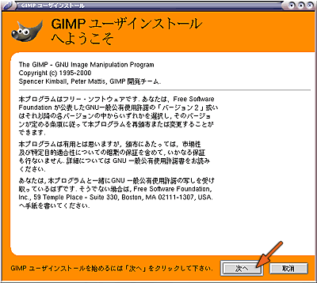
このソフトウェアは GPL (GNU General Public License: GNU 一般使用許諾) のもとに配布されているソフトウェアです．そのまま「次へ」をクリックしてください．
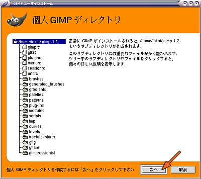
gimp はここでホームディレクトリに .gimp-1.2 というディレクトリを作り，そこに設定ファイルなど各種のファイルを置きます．そのまま「次へ」をクリックしてください．
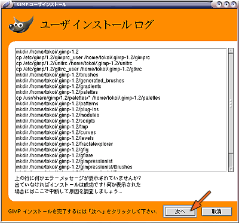
.gimp-1.2 というディレクトリの作成作業のログを表示します．エラーがなければ「次へ」をクリックしてください．
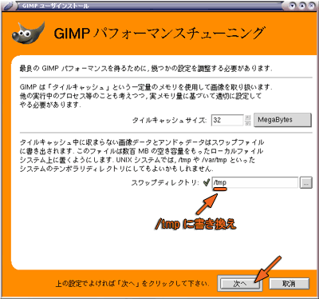
タイルキャッシュサイズが大きいほど，大きな画像の編集作業が軽快になりますが，コンピュータに搭載されているメモリよりも大きな値を指定するとかえって遅くなります．演習用のコンピュータには 512MegaBytes のメモリが搭載されているので，オペレーティングシステム等他のプログラムが使用するメモリを差し引いても，タイルキャッシュサイズに 256MegaBytes くらい指定できると思いますが，一応上限は 128MegaBytes くらいにしておいて下さい．
編集中にタイルキャッシュに入らなかったデータはスワップディレクトリ内のファイルに書き出されます．標準のスワップディレクトリはホームディレクトリの下に置かれますが，ホームディレクトリはネットワークを介してサーバコンピュータ上にありますから，ここをスワップディレクトリに使うとネットワークの通信量が増えたりサーバの負荷が増大したりしていいことありません．/tmp は演習用のコンピュータ自身のハードディスクにありますから，そこをスワップディレクトリに指定します．
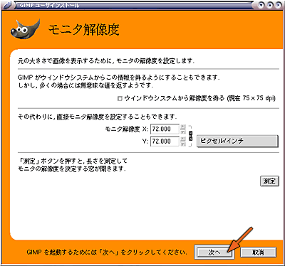
モニタの解像度は，「測定」ボタンを押して調整しても構わないのですが，今は時間がないのでそのまま「次へ」をクリックしてください．これで gimp の初期設定が完了しました．
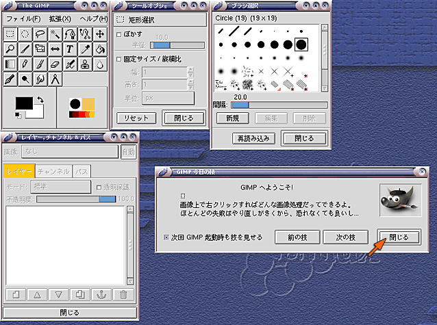
これが gimp の起動画面です．次回からはここから始まります．毎回起動すると，「今日の技」を教えてくれます．技を会得したら，「閉じる」をクリックしてください．
それでは，とにかく何か描いてみましょう．まず，「白紙」の画像を用意します．The GIMP ウィンドウの「ファイル」メニューから「新規」を選ぶか，Ctrl-N をタイプしてください．
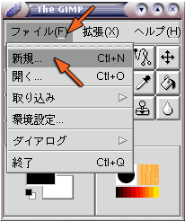
すると次のウィンドウが現れます．ここで作成する画像の大きさや解像度を指定します．
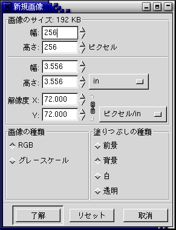
画像のサイズは作成する画像を構成するピクセル（輝点，画素）数です．解像度は，単位がインチなら（コンピュータはアメリカ由来のものなので，単位として結構インチが使われます）１インチあたりのピクセル数です．上の設定のそれぞれの数値には，次のような関係があります．
画像の種類の RGB はカラー，グレースケールは白黒を意味します．塗り潰しの種類は新規に作成する画像の下地の色です．前景と背景は，"The GIMP" ウィンドウの色設定を使います．
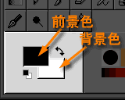
設定が完了したら「了解」をクリックしてください．「名称未設定」というタイトルが付いた作画ウィンドウが現れます．同時に，「レイヤー，チャンネル & パス」ウィンドウに「背景」という項目が現れます．

それではここに何か描いてみましょう．最初に会得した「技」のとおり，GIMP のほとんどの機能は，この作画ウィンドウ上でマウスの右ボタンをクリックして現れるメニューで呼び出すことができます．
まず，ペンの色を決めます．前景色は描画に使う色です．前景色を設定するには，"The GIMP" ウィンドウの「前景色の設定」をクリックしてください．
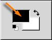
すると「色選択」のウィンドウが現れます．色の選択方法は４種類ありますが，そのうちの "GIMP" について解説します．
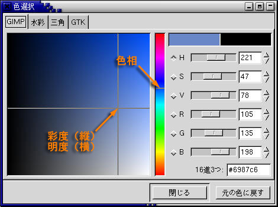
使いたい色の色相 (Hue) を真ん中の縦棒から選びます．そして左側の領域で彩度 (Saturation) と明度 (Value) を調整します．この順番はどうでも構いません．もちろん，右側のスライダをドラッグしても調整できます．このウィンドウは，邪魔なら閉じても構いませんが，開きっぱなしでも問題ありません．
次に作画に使う画材を選択します．試しに「絵筆」を選んでみましょう．
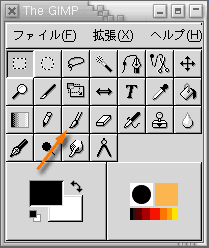
そして，絵筆のブラシ形状を選択します．ここでは小さ目の，くっきりとしたブラシを選択してみます．

その後，作画ウィンドウでマウスを動かします．失敗したと思ったら，Ctrl-Z をタイプするかマウスの右ボタンをクリックして「編集」メニューから「アンドゥ」を選べば，操作を取り消すことができます．ちなみに「リドゥ」は，取り消した操作をもう一度やり直します．
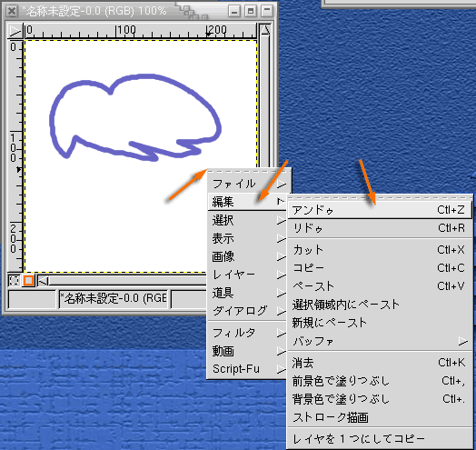
上の絵のように閉じた領域には，ペンキ缶を使って色を流し込むことができます．
ここではパターンで塗り潰すことにします．「塗り潰しツール（ペンキ缶）」を選んだ後，「パターン設定」をクリックしてください．

「ペンキ缶」を選ぶと「ツールオプション」のウィンドウが「塗りつぶし」の設定に変わります．ここで「パターン塗り」を選んでください．また「パターン設定」をクリックすると「パターン選択」のウィンドウが現れますから，ここから塗りつぶしに使うパターンを選んでください．
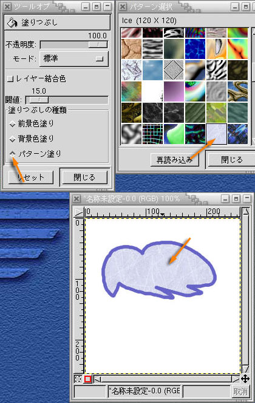
あとは塗りつぶす領域をマウスでクリックして，その領域を塗りつぶしてください（上図の下側）．
描いたものを消すには，消しゴムを使います．
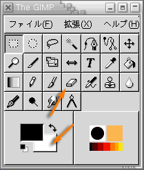
これは絵筆などと似ていますが，描画に背景色を使います（「背景」のレイヤーの場合）．

領域を選択して消すこともできます．例えば，次の方法で楕円形の領域を消すことができます．まず「円形領域の選択」を選択してください．

そして作画ウィンドウ上で領域を選択し，マウスの右ボタンで現れるメニューの「編集」から「カット」を選んでください．

選択した部分が消されます．

「楕円形選択」のツールオプションで選択範囲をぼかすことができます．
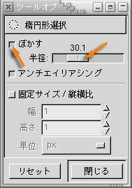
これは次のような消し方になります．

画像を拡大縮小するには，マウスの右ボタンで現れるメニューの「画像」から「拡大縮小...」を選んでください．
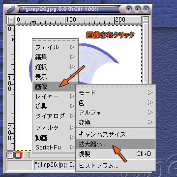
「画像拡大縮小」のウィンドウで画像の「新しい幅」「高さ」を設定してください．ここでは 100px（100ピクセル）にしてみます．「比率」の右側にある鎖がつながっていれば，拡大縮小時の縦横比が一定になるので，「新しい幅」か「高さ」のどちらかを指定すれば，もう一方も自動的に決まります．
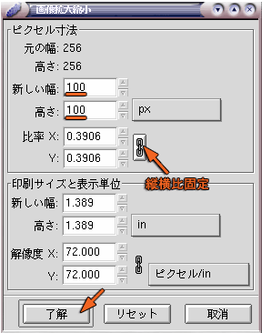
最後に「了解」をクリックしてください．
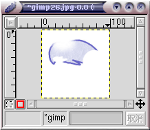
この処理も Ctrl-Z をタイプすれば取り消すことができます．
編集した画像を保存するには，Ctrl-S をタイプするか，マウスの右ボタンで現れるメニューの「ファイル」から「保存」を選んでください．

ファイル名を指定します．拡張子は保存するファイルの形式で決定してください．
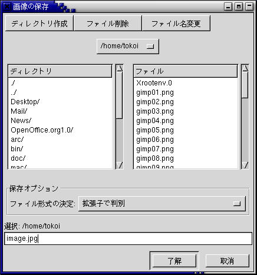
JPEG 形式で保存するときは，次に保存する際の品質（画質）を設定します．
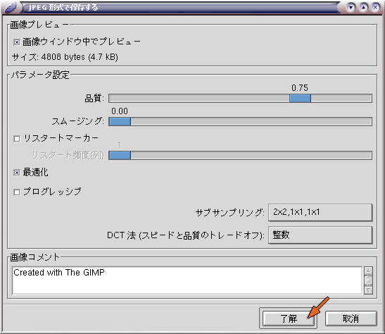
品質が高いほど画像は忠実に保存されますが，その分データサイズが大きくなります．
gimp には，目的の画像を得るために同じ手順を何度も繰り返す手間を省いたり，gimp 自身が持つ画像処理機能を組み合わせてより高度な処理を実現したりするための，Script-Fu と呼ばれる一種のプログラミング機能が用意されています．この機能によって実現された画像処理手法が既にいくつか用意されていますから，それを使ってバナー画像（Web ページを飾る看板の役割を果たす画像）を作ってみましょう．
画像を新規に作成してください．大きさは，ここでは幅400ピクセル，高さ100ピクセルとします．あまり大きな画像にはしないほうが無難でしょう．
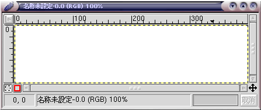
前景色と背景色を設定し，画像を背景色で塗りつぶします．塗りつぶしにはペンキ缶が使えますが，背景色で塗りつぶすためには[Ctrl]キーを押しながらマウスの左ボタンをクリックしてください．画像上でマウスの右ボタンをクリックして，現れたメニューから「編集」→「背景色で塗りつぶし」を選んでも塗りつぶすことができます．
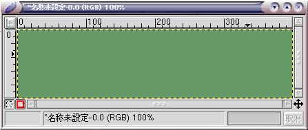
「レイヤー，チャンネル＆パス」のウィンドウで，左下にある「新規レイヤー」ボタンをクリックし，透明のレイヤを作成してください．
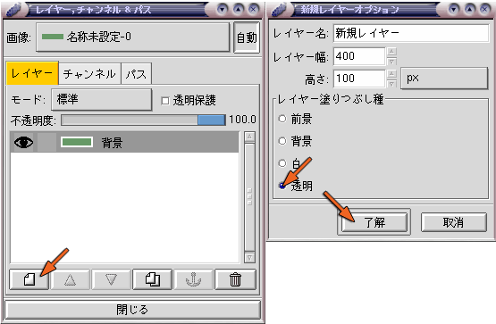
作成した透明のレイヤーに，文字を描きます．「レイヤー，チャンネル＆パス」のウィンドウで「新規レイヤー」が選択されていることを確認したら，「The GIMP」のウィンドウで「Ｔ（文字）」のボタンをクリックしてください．
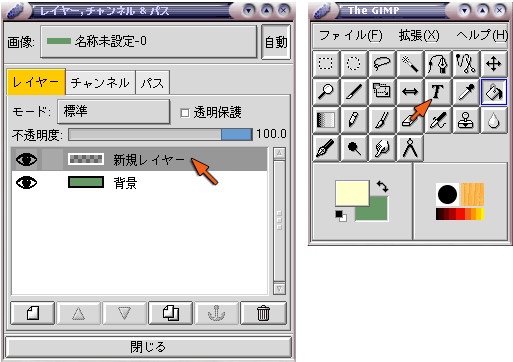
この後，画像のウィンドウをマウスでクリックすれば，「文字ツール」のウィンドウが開きます．「プレビュー」のところの文字を作成したい文字に書き換え，「フォント」「フォントスタイル」「サイズ」を選択してください．なお，日本語に対応しないフォントを選択したときには，「文字集合が不足している」というメッセージが出ます．
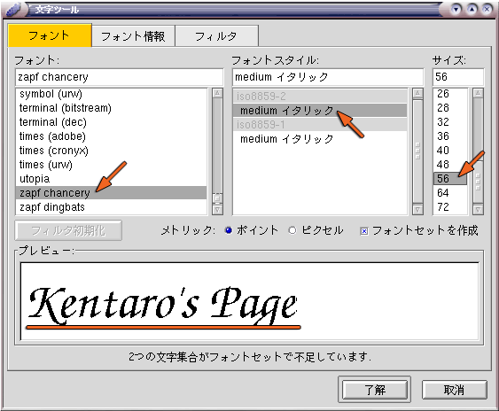
「了解」をクリックすると画像のウィンドウ上に文字が描かれ，その文字の領域が選択範囲になります．文字の上にマウスを移動するとマウスカーソルが「＋」の形になりますから，そこで文字をドラッグして文字の位置を決定してください．「レイヤー，チャンネル＆パス」ウィンドウの「イカリ」のマークをクリックすれば，「フローティング選択領域」が確定します．
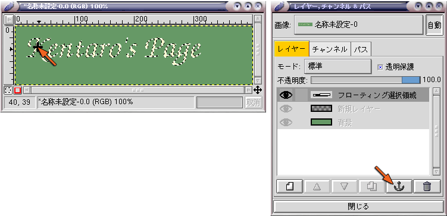
作成した文字に，ぼけた影を付けてみます．画像のウィンドウをマウスの右ボタンでクリックし，「Script-Fu」→「影」→「影付け」を選んでください．
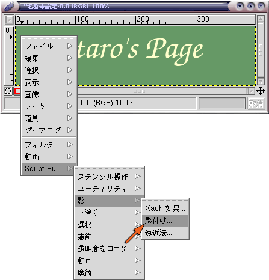
「Script-Fu: 影/影付け」ウィンドウで影のつき方を微調整した後，「了解」をクリックしてください．「オフセット」は元画像（文字）と影のずれ，「ぼかし半径」は影のぼけ具合，「不透明度」は背景の透け具合を設定します．
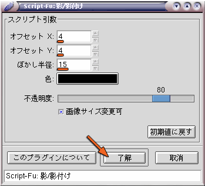
影は背景のレイヤーと元画像（文字）のレイヤーの間に生成されます．
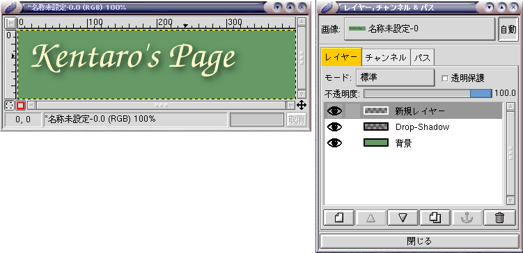
この画像を JPEG 形式で保存します．画像をマウスの右ボタンでクリックして，「ファイル」→「保存」を選んでください．
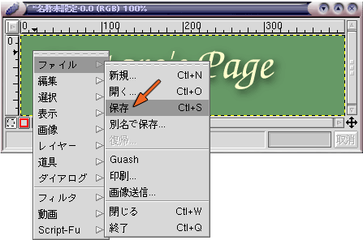
「画像の保存」ウィンドウで，ファイル名に banner.jpg を指定してください．「ファイル形式の決定」に「拡張子で判断」を選んでおけば，画像が JPEG (JFIF) 形式で保存されます．
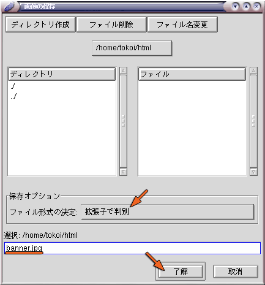
ただし JPEG (JFIF) はレイヤー構造を持った画像を保存できませんから，一旦レイヤーを統合して単一の画像に直す必要があります．このため，「エクスポートファイル」というウィンドウが開きます．なお，この処理はファイルを保存する前に手動で行っておくこともできます．
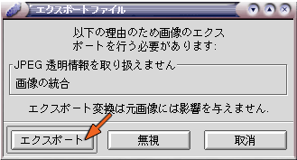
その後，JPEG 形式で保存する際の画像の品質（画質）を設定します．
後で編集するために，レイヤーを保ったまま画像を保存したい場合は，ファイル名の拡張子を .xcf にしてください．上記で作成したバナー画像を保存する場合は，まず画像をマウスの右ボタンでクリックして「ファイル」→「別名で保存」を選んでください．
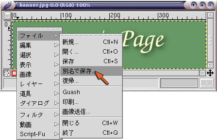
ここで，たとえば banner.xcf というファイル名を指定してください．
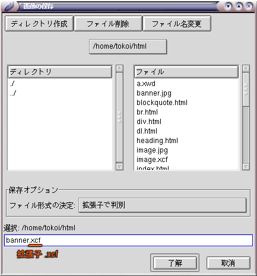
複数の GIF ファイルをもとに， パラパラ漫画のような簡単なアニメーションを作ることができます．
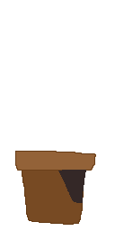 |
 |
 |
 |
|---|---|---|---|
| movie1.gif | movie2.gif | movie3.gif | movie4.gif |
上の４つの GIF ファイルをもとにアニメーション GIF ファイルを作成すると，下のようになります．

このような図は Adobe ImageRady などで作成できます．
それでは，先ほど保存した画像をホームページに埋め込んでみましょう．emacs で profile.html を開き，下線部の内容を追加してください．
<!DOCTYPE HTML PUBLIC "-//W3C//DTD HTML 4.01 Transitional//EN">
<html lang="ja">
<head>
<title>Kentaro's page</title>
<meta http-equiv="Content-Style-Type" content="text/css">
<link rel="stylesheet" type="text/css" href="profile.css">
</head>
<body>
<h1>和歌山健太郎のホームページ</h1>
<p><img src="image.jpg" width="256" height="256" alt="自画像">
和歌山健太郎のホームページへようこそ．</p>
<ul>
<li><a href="profile.html">自己紹介</a></li>
<li><a href="timetable.html">時間割</a></li>
</ul>
</body>
</html>
src 属性に指定している画像ファイル名 (image.jpg) は，ディレクトリ html に入れた実際の画像ファイル名にしてください．また width と height には，それぞれその画像の幅と高さを指定してください．出来上がったら， C-x C-s でファイルを保存してください． その後，Netscape で index.html を開いてください．画像がホームページに埋め込まれましたか？
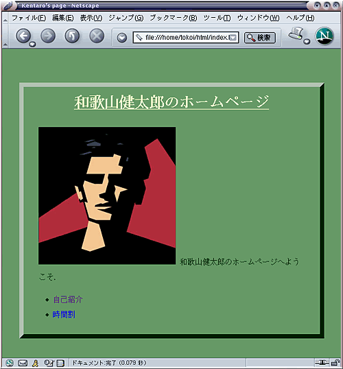
上の例のように，画像は文字と同様に文書の行内にレイアウトされます．画像の周りにテキストを回りこませたりするには，float というプロパティを用います．画像をテキストの左側に配置するには left を指定します．emacs で profile.css を開き，下線部の内容を追加してください．その後 C-x C-s でファイルを保存し，Netscape で再読み込みしてください．
body {
border: outset 8px;
line-height: 2;
margin-top: 3em;
margin-left: 5%;
margin-right: 5%;
height: 30em;
color: #003300;
background-color: #669966;
}
dl {
border: inset 5px;
padding: 1.5em;
margin: 1em;
background-color: #ffffcc;
}
dt {
font: bold italic larger serif;
border-top: dotted thin;
border-bottom: dotted thin;
background-color: #bbeebb;
}
h1 {
text-align: center;
text-decoration: underline;
color: #ffffcc;
}
img {
float: left;
}
画像に枠や隣接する要素との間隔を設定することも可能です．profile.css に下線部の内容を追加し，C-x C-s でファイルを保存してください．そして Netscape で再読み込みしてレイアウトを確認してください．
body {
border: outset 8px;
line-height: 2;
margin-top: 3em;
margin-left: 5%;
margin-right: 5%;
height: 30em;
color: #003300;
background-color: #669966;
}
dl {
border: inset 5px;
padding: 1.5em;
margin: 1em;
background-color: #ffffcc;
}
dt {
font: bold italic larger serif;
border-top: dotted thin;
border-bottom: dotted thin;
background-color: #bbeebb;
}
h1 {
text-align: center;
text-decoration: underline;
color: #ffffcc;
}
img {
float: left;
border: inset 5px;
margin-right: 2em;
}
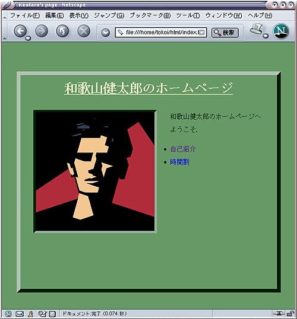
あと，デジカメやスキャナを用意しますので，自分の顔写真や自分で描いたイラストなど，独自の素材を使う希望があれば知らせてください．画像が大きすぎる場合は gimp や ee を使って画像を縮小するか，不要な部分を切り取ってください．
自分の Web ページを見てくれた人からメールをもらいたいときは， 自分のメールアドレスを Web ページに明記しておきましょう．これは，メールをもらうだけでなく，そのページの責任の所在（文責）を明らかにするという点でも，意味のあることです．
ただし，最近は不用意にメールアドレスを公開すると，スパム（迷惑メール）が届くことがあります．スパムの宛先となるメールアドレスはソフトウェアによって自動収集されることがほとんどなので，コンピュータにはメールアドレスだと判断されないが人間が見るとメールアドレスだと判断できる記法を用いることにより，スパムが届く可能性を避けることができます．
ただし，これはいずれも根拠のない自衛策です．また「Web ページの文責を明らかにする」という実名主義の観点からも疑問が残りますので，決して推奨はしません．スパムの中には猥褻なもの，詐欺を目的としたもの，コンピュータウィルスやワーム，脅迫など，犯罪的なものも存在しますが，そういうものから身を守れるかどうかは，結局自分自身が正しい判断を行えるかどうかにかかっています．
積極的にメールを受け入れたいと考える場合は，次のような手法を用いることができます．<a href="mailto:メールアドレス"> ～ </a> というように， ホットスポットのリンク先に Web ページの URL ではなく "mailto:自分のメールアドレス"
を指定すると， そのホットスポットをクリックしたときに Web ブラウザのメール機能を呼び出すようにできます．なお，ここには正しいメールアドレスを指定しなければ意味ありません．
<a href="mailto:tokoi@sys.wakayama-u.ac.jp"> <img src="mail.gif" alt="メールください" width="64" height="64" border="0"> メール下さい</a>
これは下のようになります．この絵か文字をクリックしてみてください．
 メール下さい メール下さい |
ホットスポットとして画像を使用したとき， 通常では画像全体で一つの URL にリンクします． これを，画像上のクリックした位置によって異なる URL にリンクするようにしたものを，クリッカブルマップと呼びます．
クリッカブルマップの実現方法には，いくつかのものがありますが，ここでは <map name="マップ名"> タグを使う方法について説明します．ただし，この方法は古い Web ブラウザでは機能しません．
<map name="organization">
<area
shape="rect"
coords="34,155,244,189"
href="http://www.sys.wakayama-u.ac.jp/">
<area
shape="rect"
coords="34,115,244,149"
href="http://www.eco.wakayama-u.ac.jp/">
<area
shape="rect"
coords="34,75,244,109"
href="http://www.edu.wakayama-u.ac.jp/">
<area
shape="rect"
coords="9,14,224,59"
href="http://www.wakayama-u.ac.jp/">
</map>
<img src="map.gif" alt="和歌山大学・学部" width="260" height="200" usemap="#organization">
<map name="マップ名"> ～ </map> でマップを定義し， そのマップ名を <img src="マップ画像" usemap="#マップ名"> で指定します．
<area> タグの shape= 属性は，マップ画像上のホットスポットにする領域の形で， "rect"（長方形），"circle"（円）が指定できます．また
coord= 属性は， shape= 属性で指定したホットスポットの座標を定義します．
shape="rect" の場合は長方形の左上の頂点と右下の頂点の位置を指定します．
shape="circle" の場合は中心の位置と半径を指定します．
<area shape="rect" coords="左上のx座標,左上のy座標,右下のx座標,右下のy座標" href="url">
<area shape="circle" coords="中心位置のx座標,中心位置のy座標,半径" href="url">
<area> タグの href= 属性は， そのホットスポットにリンクする URL を指定します．
<img> タグに border="0" を追加してください．
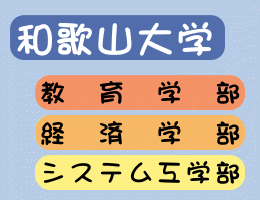
課題ができたら，メールで tokoi@sys.wakayama-u.ac.jp まで知らせてください．私が確認したら返事を書きますので，それ以降は自由に変更していただいて結構です．時間割へのリンクなどははずしておいてください．なお，上記のサーバは学外に公開されていますから，他人に見られて恥ずかしくないものを公開しましょう．大学の Web ページとして不適切なものが公開されていた場合は削除します．
著作権についてWeb ページの素材として他人の Web ページ上の記述や画像，音声・音楽等を許可無く使用してはいけません．同様に雑誌等の写真や図版，CD 等の音楽，ビデオや DVD の映像等の他人の著作物を無断で利用してはいけません．
{kind=link}
{kind=link}
{kind=link}
{kind=link}
{kind=link}